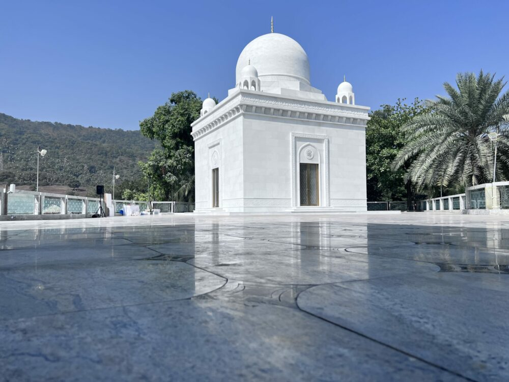
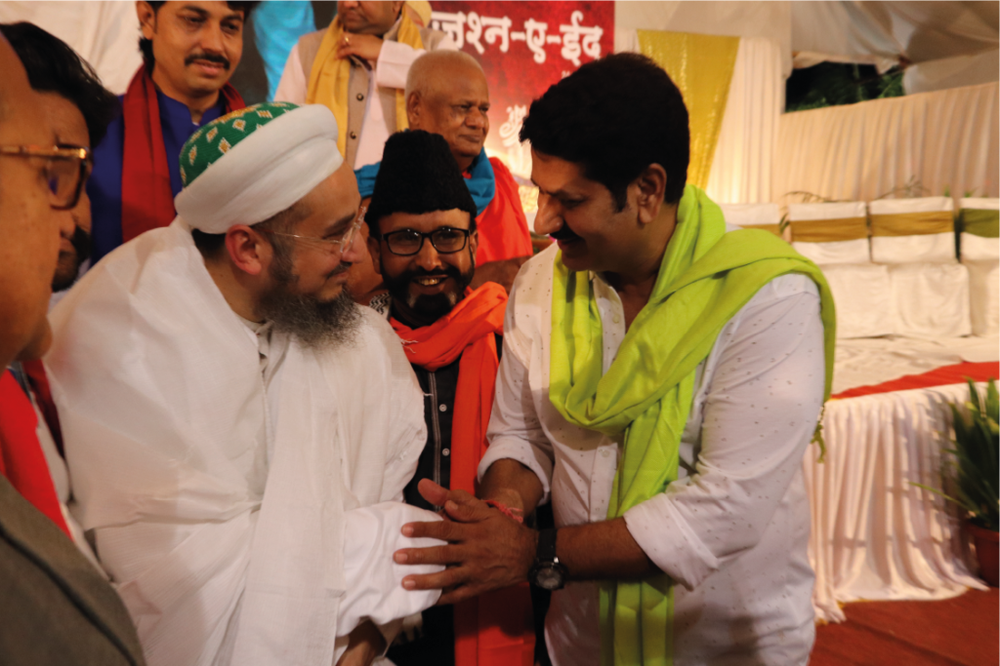
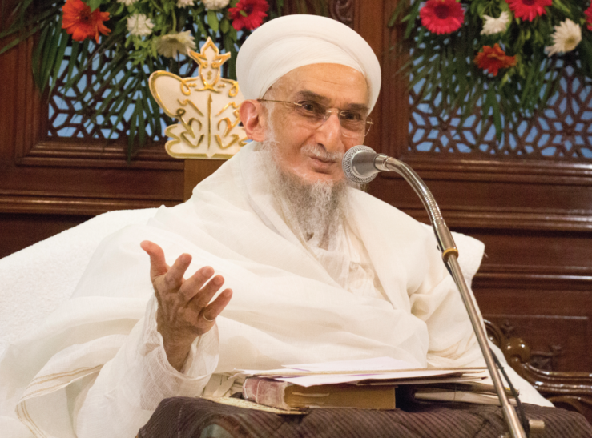
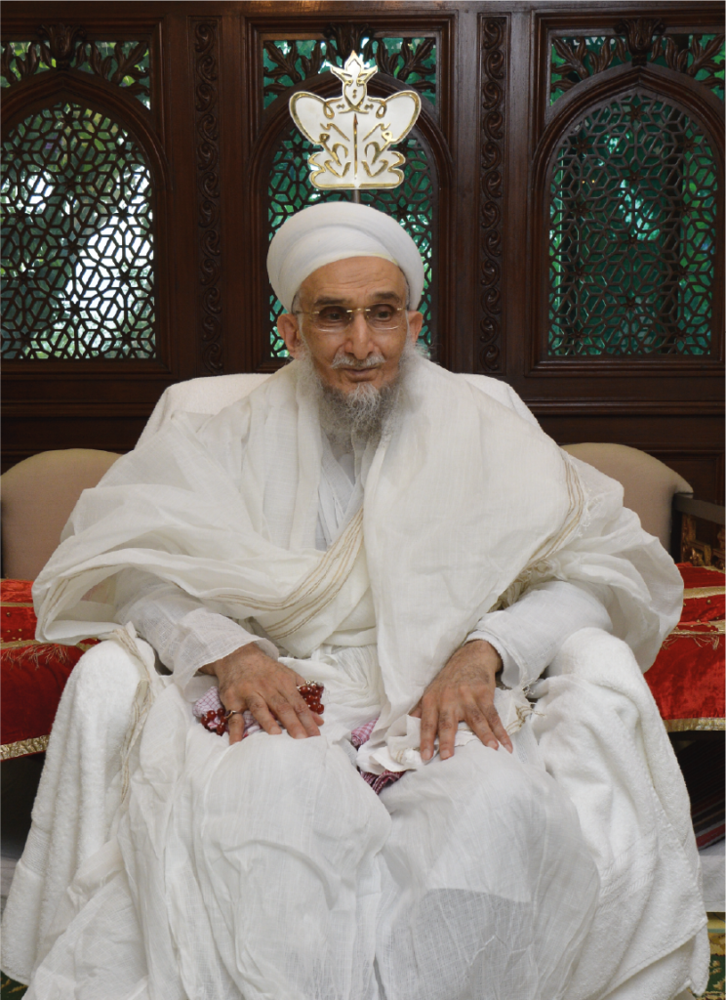

Raudat-un-Noor in the Mazaar-e-Qutbi Complex was built in honor of the 53rd Dai al-Mutlaq His Holiness Syedna Khuzaima Qutbuddin Saheb RA by his son and successor, His Holiness Syedna Taher Fakhruddin Saheb TUS. The complex comprises Raudat-un-Noor (mausoleum, commonly known as "dargah") of Syedna Khuzaima Qutbuddin RA Saheb, the Community Hall, and the Social Welfare Center.
Register for Raudat-un-Noor Dargah tour at Mazaar-e-Qutbi
Every Sunday starting at 5:00pm, guided tours are available in English, Hindi and Marathi. Each tour is approximately 30 minutes.

Architectural Overview
Raudat-un-Noor stands nobly and splendidly between the greenery of Sanjay Gandhi National Park and the bustling streets of Thane, its glow akin to a precious pearl

Mazaar-e-Qutbi Social Welfare Center
Adjoining Social Welfare Center open to all regardless of caste or creed for women's vocational training classes, Niyaaz free vegetarian meals, and children's tuition classes.

Syedna Qutbuddin RA
Syedna Khuzaima Qutbuddin RA was a shining star of guidance and the divine light of Allah shone in him. His mausoleum manifests a glimmer of the shining light that shone in his face for generations and generations to come.

Syedna Fakhruddin TUS
Syedna's TUS peace, tranquility, and continuous energy belie the immense weight of the responsibility he carries, of leading the Dawat, of ensuring its future and prosperity, and of caring for the worldly and otherworldly welfare of all Mumineen.

“Syedna Qutbuddin was a pious saint, a benevolent father, and a divine angel whose dominion was one of love over the hearts of his followers”
The completion of Syedna Qutbuddin’s Roza Mubaraka is the culmination of Syedna Fakhruddin’s vision to build a mausoleum for Syedna Qutbuddin that shines for the people of the sky as the stars shine for those on earth. The love Syedna Qutbuddin had for his community, and the love that his followers and devotees had for him, transcends the finiteness of life in this world. It is the power of that love that made this project come about the way that it has. The fragrance of Syedna Qutbuddin’s character, the perfume of his goodness, we feel it here, in his mausoleum. We inhale it here in this mausoleum. And we hope that our children and our children's children will be reminded of that, as they come for ziarat here, for centuries to come. This truly was for all those involved the honour of a lifetime and a labour of love.